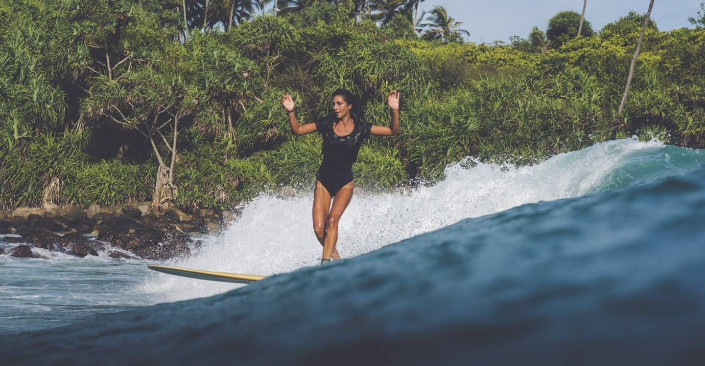

Surfen op Zuid Sri Lanka
Sri Lanka wordt wel gezien als het Bali van de jaren ’70. En sinds het eiland weer zo veilig is, de Tsunami alweer relatief lang geleden is (2004), hoor je overal reizigers enthousiast terugkomen van dit eiland naast India. Zeker de surfende reizigers. Sri Lanka is niet voor niets booming.

Verschillende surfspots in zuidwest Sri lanka
De surfspots aan deze kant van Sri Lanka zijn vooral geschikt voor beginners en intermediates. Je vindt hier relatief veel lefthanders.
- Hikkaduwa
Dit is het surf centrum van Zuidwest Sri Lanka. Maar het is ook goed voor snorkelen en duiken. Hikkaduwa is een goed ontwikkeld stadje met diverse surfshops en surfscholen. De surf spots rond Hikkaduwa zijn vooral beach- en reefbreaks.De beachbreak in het stadje heeft een zandbodem is ideaal voor beginners.
- Unawatuna
Unawatuna is mooi strandplaatsje en heeft een reefbreak, dat makkelijk de golven oppikt. Iets meer ten westen heb je spots als Midigama, Rams en Lazy Left. Leuke golven met een eenvoudige take-off. Maar wel kan barrelen als de golven wat hoger zijn. Ook in de buurt vind je Kabalana, waar een lefthander eindeloos door kan lopen. Een andere, rustigere, spot is South Beach. Met een tuk-tuk zit je er zo.
- Hiriketiya
Een idyllische baai met het beeld van een klassieke ansichtkaart; palmbomen, parelwit strand en helder blauw water. Voor beginners breekt er midden in de baai een leuke golf. Verder vooral voor longboarders geschikt. Goed hipstergehalte ook in dit plaatsje.
-

- Ahangama
Een knus lokaal stadje. Dichtbij heb je veel diversiteit aan stranden (lees: surf spots) en een hoop “secret spots”. Go and explore.